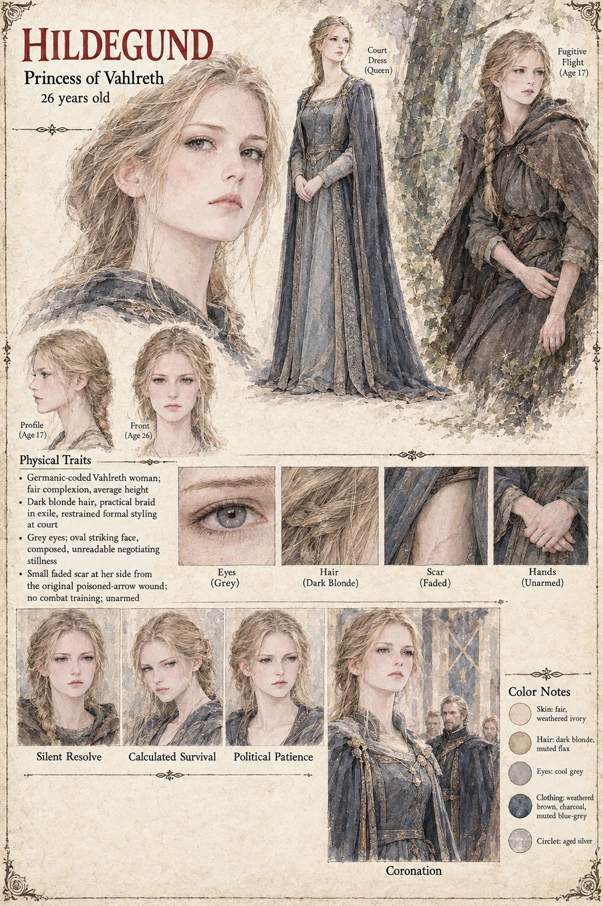

Hildegund
Princess of Vahlreth, later Queen Hildegund the First · seventeen on the night of the fall, twenty-six when she walks back up the north road, thirty at her crowning · carrier of the Hereditary Marker · keeps a private ledger of what she owes
The daughter of Sigward, seventeen and not yet anointed on the night the duke's men take Vahlreth, and, by the law called the Unbroken Blood, the one person alive whose breathing keeps Otwin's claim void. She runs with two guards down a corridor the smoke has begun to rearrange, and the thing that has lain asleep in her blood for seventeen years wakes. The Hereditary Marker does not show her the future. It strikes through every branch that ends with her dead and leaves her the one number remaining, and the number is left. At the foot of the second stair Gero has already decided to stay; the word that would have made him come with them, three syllables, is half formed behind her teeth, and she says nothing, and spends a good part of the rest of her life deciding whether that was wisdom or cowardice dressed in a crown she had not yet grown into.
A third arrow, Hagen's, finds her low in the side at the second river, and the number turns northeast, toward a thread of smoke a nurse once called, when she was nine, the pale hermit's fire. Vara opens the door before the second knock and says one word, In. She lies three days in fever, relives four deaths she did not die, and when she can stand tells him You will come with us. It is not a question; she has not, in seventeen years, needed the practice of asking for things twice. At Gertrud's table she has her first ordinary evening, and at the ford, where twenty men wait, the old machinery does not seize the problem at all: she has already answered the question it exists to ask by trusting the man walking ahead of her, a pattern tested three times and unbroken, and the manuscript is plain that this is data and not faith, and that she takes less comfort from that than everyone else does from the warmer explanation.
At Ulrich's court she asks for her kingdom back and is told to learn how kingdoms work. She is given a windowless room off the treasury, a stool and a clerk, Oderic; she loses her first negotiation to Osgerd having conceded every point that mattered and one that was not even in dispute; a levy she recommends bankrupts a minor lord, and the apology she writes him is never answered. In her fourth year she reads a ledger the way her blood once read the corridor, for the gap, and ruins Baldric in public rather than quietly, because the granary office needs the lesson; she learns from Reinolt's season of silence afterwards that competence and decency are not entries in the same ledger. By her sixth year she has a faction, and a habit she would have called an exercise: buying Vahlreth's grain-price rolls from the autumn factors and tabulating them by lamplight, because a ledger from home is the one she never learns to stop reading. Twice she orders the mule saddled for the north road, and twice, unable to compose the first sentence to a man who asked for nothing and would therefore have nothing to refuse her, sends it back to its stall.
At twenty-six she rides north at last, and the visit costs two of her men-at-arms, Wendel and Berthold, to whose widows she writes in her own hand, and brings twelve of Otwin's men out of the trees. The attempts that follow are the ones the manuscript tells in turn. At the spring banquet she feels a wrongness in the wine and walks to the window, not the door. On the water-stair it is her dread of stairs that gives the old machinery something to work on. On the eastern road the blood gives nothing, because fear needs a moment to gather and the wheel allows none. And on a night in high summer it reaches her through a dream, moves her six inches to the left, and she wakes into a gloved hand and screams. When Frida confesses, Hildegund's first question is whether the sealed account is still in Otwin's strongroom and whether a copy could surface by a route that leads back to no name. The plan that follows is hers: the account laid before Ulrich, six chancelleries' worth of ink laid beside it, and the choosing of the day and the road left to him. She keeps Frida as a watched channel whose every report is true and unhelpful, and has the account read aloud before the combined councils of both kingdoms, at her own insistence, which costs her the one private fact about herself she has kept for thirteen years.
She meets Otwin across a plain table, opens not with the eleven years but with his own treasury's numbers, and tells him You have run this kingdom better than my father did, which she is careful to make plain is not forgiveness. Then she says My father, and nothing after it. He neither defends nor denies, and she enters it in a ledger no one else will read as the one line the appointment will not close. She is crowned on the fourteenth of Eldren in Vahlreth's cathedral before the Vigil's own altar, in a ceremony her nine-year-old self would have found unbearably plain, and her first act is to name Otwin her Chancellor. What she has by then is a colder, learned cousin of the old machinery: an ordinary mind trained, slowly and on purpose, to do what the blood once did in half a heartbeat. Years on, she visits Vara at his new river shack half hoping to talk him into a title, court alchemist or royal physician, anything that would let her put his name on a payroll and call the debt closed, and understands, watching him refill a kettle, that she never had a chance of winning that negotiation. He asks Are you the queen now? Before she leaves he asks whether she knows of the Observer, and she does not.
The manuscript gives her no face, hair or colouring at all; every physical detail on her page is the sheet's. It draws her dark blonde and grey-eyed, fair-skinned and slender, with a small faded scar at her side from the arrow, as a fugitive of seventeen in a braid and a borrowed dress, at twenty-six, and as a queen in court dress with a small circlet. The circlet is the manuscript's own.
“You have run this kingdom better than my father did.”
Appears In

Related Subjects


Related Records

On the night Vahlreth falls Gero takes the second stair and simply refuses to let the first man through the door. It costs the duke's men four full minutes and him everything he has left, while Hildegund, three syllables unsaid behind her teeth, runs on.

In a burning corridor, with Reinolt at her shoulder and Adalger three steps behind, Hildegund feels the ceiling ahead go orange and the Hereditary Marker wake. It strikes through every branch that ends with her dead and leaves her one number: left.

At the second river Adalger dies mid-sentence with an arrow in the gap of his cuirass, and a third arrow, Hagen's, finds Hildegund low in the side. Reinolt takes an arrow in the shoulder, and the number turns northeast, toward the hermit in the forest.

In the shack in the forest Vara says one word, In, and closes Hildegund's wound with a paste the colour of river clay. Reinolt will call it magic for the rest of his life. What it was, the manuscript says, was competence: old, unhurried and entirely explicable.